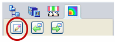
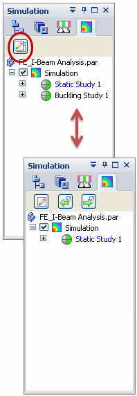
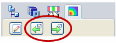
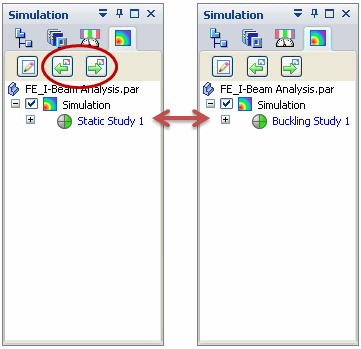

Using the Simulation pane
Displaying the Simulation pane 
You can display the Simulation study navigation pane by clicking the Simulation tab, which is located in the same tab set as PathFinder.
You can turn the Simulation pane on and off using the View tab→Show group→Panes command, and then selecting or clearing the Simulation option.
Modifying studies from the Simulation pane
You can use the buttons on the Simulation pane to locate, review, and modify study definitions. You also can create, process, and review analysis studies using only shortcut commands.
-
The Show Single/All Studies button is located at the top of the Simulation pane.

The Show Single/All Studies button changes the display list to show all studies or just one study at a time. This is useful for managing a long list of studies in the tree view.

-
Use the Show Next and Show Previous buttons to display the next and previous studies in the list.


Note:The Next and Previous studies may be stored in different model states (Synchronous, Ordered, or Simplify).

-
The active study is shown in blue text.
-
 indicates that the study component has been modified.
indicates that the study component has been modified. -
 indicates a tip or additional information is available. Position your cursor near
the icon to read the message.
indicates a tip or additional information is available. Position your cursor near
the icon to read the message.
For the currently active study, you can:
-
Identify processing status by its study status indicator:
 .
. To learn about these icons, see Reviewing the study status.
Using Simulation pane shortcut commands
You can use the shortcut commands available from the nodes in the Simulation pane to:
-
Create a study and modify the study processing parameters.
-
Create, rename, and delete loads and constraints.
-
Copy and paste studies, loads, constraints, connectors, and meshes within the current document or between documents. See Copy and paste studies or individual simulation objects.
-
Mesh the model and refine the mesh.
-
Solve for the analysis results.
-
Create a report of previously solved results.
-
View results in the Simulation Results environment.